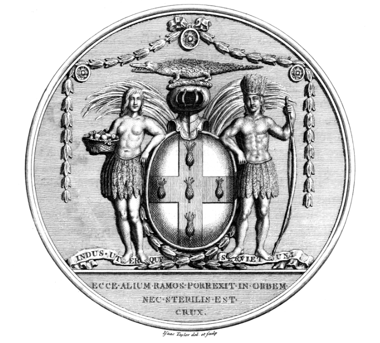

Jamaican History Online is a digital archive for transcripts, records, research notes, and source guides relating to Jamaican history.
The first stage of this project will publish structured transcripts of historical documents, beginning with manumissions, deeds, wills, estate papers, and related archival records.
Archival images will not be reproduced unless rights are clear. Where possible, transcript pages will link back to the holding archive or source catalogue.